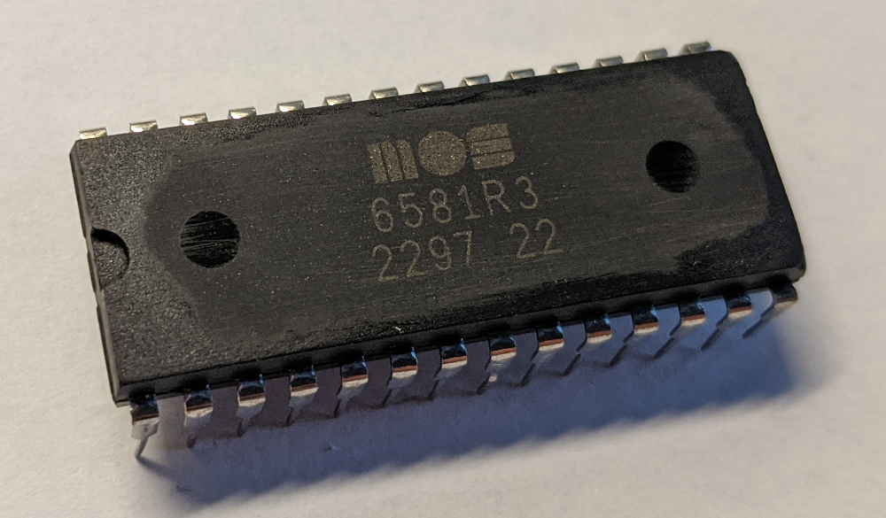
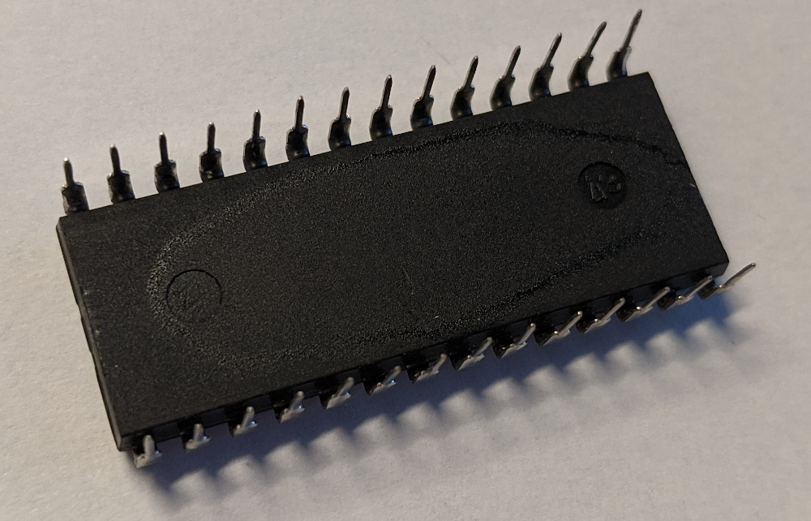

SID recordings
These are flac recordings of Jeroen Tel's RoboCop 3. All recordings are done with my SID player.
The first one is recorded with a genuine 8580R5. The second one is a fake 6581 chip I got from eBay. The output volume of the fake chip is low, so the third one is the same recording but amplified to the same volume level than the first one.
This comparison is not the best, as both chips were using 22nF filter capacitors designed for the 8580. The 6581 chip should use 470pF instead (the datasheet suggests 2.2nF, but the C64 has 470pF for 6581's).
I think the fake chip sounds surprisingly good with this tune, which is why I think it is a real, but sanded+repainted, partly working SID chip instead of something else. On other tunes, there may be parts that are total silence, or produce some weird noises only.
- RoboCop 3 (genuine 8580R5)
- RoboCop 3 (fake 6581, actual output)
- RoboCop 3 (fake 6581, post production amplification)
Pictures of the fake chip. Note the production year of 1997, and no markings on the bottom side. The stain on the chip is me trying acetone on it to see if the markings come off. The paint was removed, but markings stayed pretty much intact, maybe a slightly more fainter now. The seller had an image of a 6581R3 from 1985 in the eBay listing.
 